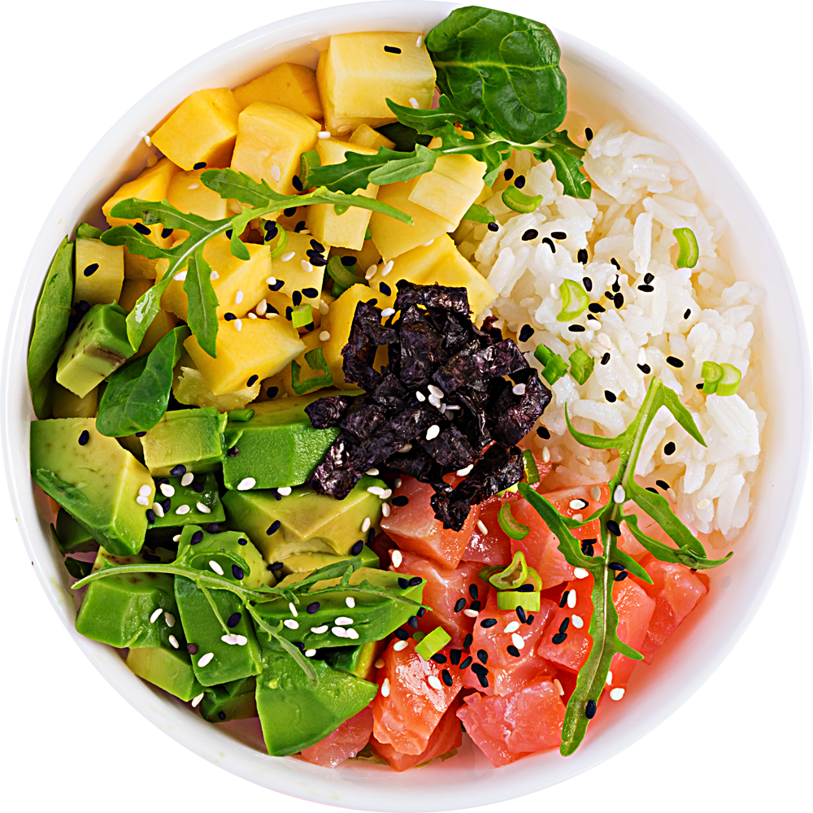
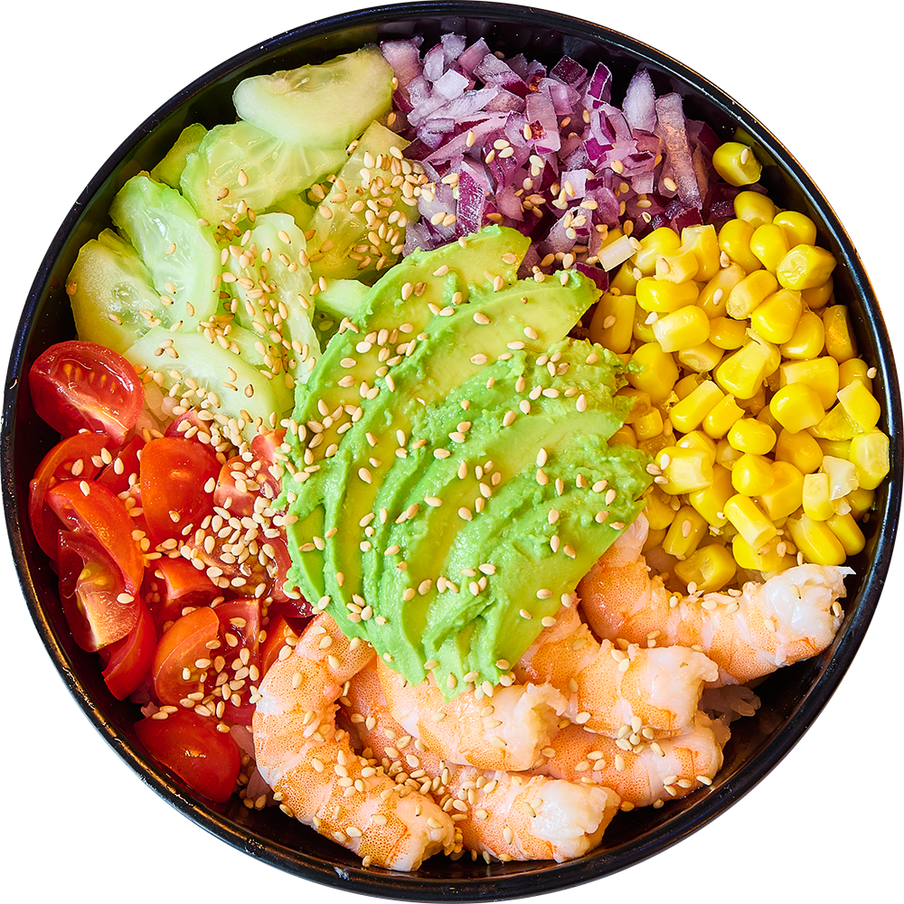

Eat Fresh
Eat Trendy
샐러디는 지속가능한 브랜드가 되기 위해 노력합니다
지속가능성을 위해 자체 친환경 정책으로
사람들의 건강과 지구의 건강에 기여하고자 합니다
From Farm
to Table
샐러디는 자체 농장인 ‘샐러디 팜’과
자체 가공공장인 ‘샐러디 키친’을 운영합니다
농장을 직접 관리하여 최상의 식탁을 제공합니다




Salady Franchise
샐러디는 샐러드 전문점을 넘어 건강한 패스트푸드로 도약하고자 합니다.
더 맛있고 건강한 메뉴들로 많은 사람들에게 즐거움과 건강함을 선사하는 브랜드가 되겠습니다.
-

지속가능한 브랜드
샐러디는 지속가능한 브랜드가
되기 위해 노력합니다. -

From Farm to Table
자체 농장 ‘샐러디 팜’과 가공공장인
‘샐러디 키친’을 운영합니다. -

지속가능한 새로움
샐러디는 매년 4회, 분기별
계절메뉴를 출시합니다. -

좁힐 수 없는 격차
샐러디는 타 브랜드가 따라올 수
없는 격차를 만들었습니다.
Best Combination
신선한 채소 베이스 위에 따끈한 통곡물 밥이 더해져 더욱 든든하게 즐길 수 있는 베스트 메뉴
Fresh Salady
샐러디는 샐러드 전문점을 넘어 건강한 패스트푸드로 도약하고자 합니다.
더 맛있고 건강한 메뉴들로 많은 사람들에게 즐거움과 건강함을 선사하는 브랜드가 되겠습니다.


샐러디는 음식을 통해 사람들의 삶을
즐겁고 건강하게 만들기 위해 노력합니다.
맛있고 건강한 메뉴들로 보다 많은 사람들에게 즐거움과 건강함을 선사하는 브랜드가 되겠습니다.